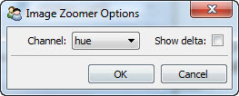

Displays an input image as a zoomable image using the standard Facets ImageZoomEditor. Refer to the image_zoom_editor section for more information on using an image zoom editor.
facets.extra.tools.image_zoomer
None.
Drag selecting a region in the image zoom editor overlays color information about each selected pixel, provided you are sufficiently zoomed into the image to display the information.
You can specify the channel and style of color information to display using the tool’s options dialog available via the tool’s feature toolbar:
Specifies which color channel information should be displayed. The possible values are:
Shows the image zoomer tool displaying an image captured using the ImageGrabber tool.
The image zoomer tool’s options dialog.